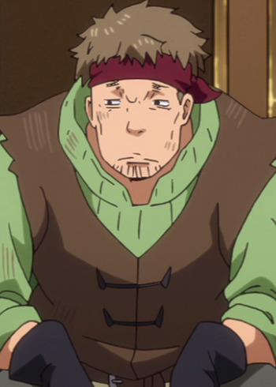

Ryuuichi Kijima is a Japanese voice actor. He voiced Brawnz Ni and Sage Ayana in the U.S. ONA RWBY. He did several voices in Naruto.
- Gender: Male
- Birthday: March 29, 1985
- Hometwon: Hokkaido, Japan
- Hobby: Traveling

|

|
| |
Ryuuichi Kijima is a Japanese voice actor. He voiced Brawnz Ni and Sage Ayana in the U.S. ONA RWBY. He did several voices in Naruto.
|
|
|---|
|  | Gido | That Time I Got Reincarnated as a Slime | Gido is a member of Cobal's Party who serves as the 'thief' role. He is the most most steadfast and reliable among the trio. He is strong and does not talk much out the group. |
Go Back to Main Page |
Go Back to Homepage |
|
|
|
OR |
|